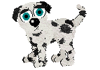
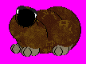

What Is Petz?
Petz is a virtual pet simulation game franchise originally made by P.F. Magic (apparently it stands for Pure F-word Magic :P ). The games revolve around taking care of your Petz (Catz and Dogz). It’s open-ended and there are no overarching goals.You can play with them, give them Toyz, dress them up in Clothez, go to different Playscenes and even breed them! You can also paint parts of them individually. Wow. By default, there are 32 (15 Catz, 15 Dogz, and Pigz and Bunnyz in Petz 4 who can’t breed without being hexed), but you can have more by hexing. I also like to breed random breedz and see what monstrosities I can come up with- Ahem. :P Anyway, I’ll explain hexing, PetzA, and other stuff below, after the list of games released in the Petz franchise.
Also, a little trick: In Petz 3, 4, and 5, you can press Ctrl + (first letter of the playscene) to go to different playscenes! :D For example, CTRL + F goes to the Family Room playscene and CTRL + K goes to the Kitchen.
List of Games Released
There are 5 Petz games released (the REAL ones ;) ), and two spinoffs. Here’s the list:Dogz 1 and Catz 1 (1995/1996). Dogz 1 is the first game released. It’s very basic and doesn’t have many of the features of the newer ones, such as breeding, playscenes, or clothes! You can only adopt one dog at a time, and only one dog can be out at a time. You have to return the dog before you can get another one! Nevertheless, it was very popular, and soon, Catz 1 was released. Now you could adopt more than one Catz, and mouseholes were introduced (holes for mice to go in and out; only in this game could mice be eaten; in the later ones they’re just caught and played with, then released; and they didn’t remove eating the mice because of gore since the mice are just gulped down), but other than that, not much changes. The interesting thing about these two is that the inside of the Adoption Center’s shown, and apparently the woman running the Center is a literal cat lady…
Oddballz (1996). Oddballz is a unique spinoff of Petz. In it, instead of taking care of Catz and Dogz, you take care of Oddballz. There can be only one Oddballz out on the screen at a time, and they can’t breed, dress up or go to different playscenes. Other than that, their personalities are interesting. You can even note down their likes and dislikes! But I’m not sure if they’re the same for every game (rhyme)…
Petz II (1997). Oddly, this is the only title to have Roman numerals in its name. Anyway, this is the first title where you can have both Catz and Dogz in your game at once, AND have two Petz of any kind on your screen at once! (Although, for all Petz games except the first, you can only have two Petz on your screen at once unless you use PetzA. More info on PetzA later in the article.) The Petz’ appearances also got changed a bit. Also, this is the first game in which the ‘neglect’ feature was introduced. More on that after this list. Some new Petz breedz, toyz, and Playpen backgrounds were released with this game as DLC. Other than those three (and certain animations exclusive to this game), nothing much has changed.
Petz 3 (1998). This is the game where everything changes. The UI has been renovated, and you can now breed your Petz, take them to new playscenes and put clothes on them! The playscenes are: the Adoption Center (inside not shown anymore), the Playpen from previous versions, the Living Room, the Kitchen, the Backyard, the Toy Closet, the Clothes Closet, and the Beach. You cannot breed Catz and Dogz with each other, but you can breed different breeds with each other to create Mixed Breedz (eg. a Dalmatian with a Sheepdog). All the Petz II DLC was added to this one and all later ones by default, and there was also DLC released for Petz 3 (a new Playscene and some Clothez and Toyz). The Toy Closet has been split into a Carrying Case and a Toy Closet playscene and thus has shrunk to only be able to carry 9 items at a time (previously it had 4 SHELVES). O_O This is also the game where hexing became more common… ;)
Babyz (1999). Babyz is interesting. In this spinoff, you take care of human babies, not Catz or Dogz. You can take care of only 3 cute babyz at a time, but there are 15 total. If you want to abandon one, they can be sent to Grandma’s House. It sounds nice, but I don’t have it, so… I do know from videos that the UI is different, you can’t create new rooms (without hexing them), and you can also hex babies so that they can have different eyelid colors, hair colors, eye colors, skin colors, etc. You can also dress them up, play with them, and give them food and baths. Some of the Petz toys were reused. You can talk with your babyz using a microphone, and teach them English and how to walk, which is cool, but ViaVoice doesn’t really work in newer computers...
Petz 4 (1999). My favorite version, and the only one I have installed right now! ;) Not much change, except for a few new playscenes based on various locations: Arabia, Gypsy Circus, Snow Scene (Petz 3 DLC; second fav, due to the sheepdog host; sheepdogz are my favorite Petz breed), South Seas Island (my fav, due to the cute bulldog host), and Wild West. The game provides you with a cool Travel Diary to go along with them. They have hosts, who are Petz who can interact with your Petz, appear randomly, and cannot be adopted; there are Catz and Dogz hosts depending on your version; if you have both, it’s random whether you get a dog host or a cat host. Petz 4 does have some very minor oddities; for instance, certain DLC Clothez from Petz 3 are missing by default. There are some new clothes and toys (along with almost all the DLC from Petz 3); you can talk with your petz now and train them easier (although you can still use treats if you have no microphone or yours doesn’t work or ViaVoice doesn’t work [most likely the latter]), a Playscene Creator which acts odd in newer versions of Windows unless you change the resolution to 1024×768, and some DLC (clothes and toyz) for this game. That’s all!
Petz 5 (2000). The last version. Not bad, but not good either. It’s the one people remember most since it’s the newest (of the real games ;) ). Here’s why it evens out to an okay rating: while it does feature cool stuff like changing the skin of your Carrying Case (although that can be done in Petz 4 by hexing ;) ), being able to close the Case completely and thus block the pet door (although that’s the only way to access the Camera button in this game), litters (more than one baby, good for breeders; I bet they weren’t put in older games due to memory troubles of computers at the time), weather (snow, rain, sun, thunder), day and night (in real-time, and you can set it to Always Night as well), restoring original colors of all Petz at once, partly coloured tails in puppies and kittens, a fancy fade transition, better graphics (24-bit graphics), 5 new dog Breedz and 5 new cat Breedz (Papillion, German Shepherd, Golden Retriever, Jack Russel Terrier and Pug dog Breedz; Desert Lynx, Egyptian Mau, Honey Bear, Japanese Bobtail and Scottish Fold cat Breedz), a new playscene called the Salon where you can bath your pet and put clothes on xir (yes, the Clothes Closet was moved to the Salon), the option to only turn the sound off when the game’s window is inactive (cool!), some new playscenes (Haunted Mansion, Fantasy Castle, Asian Temple), a Nursery playscene, all the DLC from the previous games (except the missing Petz 3 DLC?), and some new Toyz and Clothes (including a cute unicorn toy which is also available for Petz 4 from fansites)…
It has problems like the Petz not reacting to the weather; when you go to a different playscene the weather goes away; the Salon is just for fun (not a problem though, especially since you can restore the original colors of all Petz at once there), only mothers with their litters can go into the Nursery playscene and once the babies grow up the Nursery playscene is locked until another mother gives birth, and mothers and their litters are trapped in the Nursery; some of the new Petz act weird or look weird (like the Papillion); hexing new Toyz and stuff is a bit more tricky due to Petz 5 being more perfectionistic with graphics (requiring a certain color depth), and finally, the sample names (the default names that come when you adopt a pet, like Homebody and Jester for some Catz breeds) for the new breedz are not as creative as the originals (Pappy the Papillion?! Puggy the Pug?! Really?!).
But there are three major problems; the first one is… the Toy Closet has been removed. Now all your stuff is in the Carrying Case! This means you have to scroll through to get stuff… Another major problem is that the Playpen has been removed! (I use the Playpen a LOT in Petz 4). They DID intend to put it in, judging by the fact that Studio Mythos’s logo is a wallpaper in a folder in the Petz 5 directory. O_O (Also judging by a Petz Tip they accidentally left in that mentions it and the option available to change the wallpaper simply being replaced with Studio Mythos’s logo.) This means that when the food bowl annoyingly bounces around (like in Petz 4, but not in Petz 3), where will you feed your Petz?! (You CAN create one using the Playscene Creator though, and/or use the Desktop scene (explained below), so… [rhyme]) Yet another major problem is that there are minigames in each playscene (Simon Says; Obstacle Course; Scarab Crunch; Rock, Paper, Scissors; Tic Tac Toe). While not a problem by themselves (some are actually cool, some aren’t), they are the only way you can get Toyz! (Like the Paint Bucket, Love Potion, and Heart Pillow!) O_O So the one I recommend you play often is Scarab Crunch since it’s easy and fast, since you get a random toy each time you win. O_O (You can also use Tinker, a utility made by Sherlock Software, to get all the toyz you want). I got most of this info from another review, here, as well as playing the game myself. Due to these problems, it’s less used than Petz 4 for hexing, but for breeders, the litters and different colour inheritations (like the partly colored tail) are boons. Phew! That was huge! ;)
Petz Guide:
Can they die?
Nope! But they can be abandoned if you open the game up every day and not feed or play with them. If you don’t open the game up every day, they won’t get abandoned (phew!). You can also make the Neglect bar 0 each time you open Petz using PetzA, to prevent it rising and your petz running away. In Petz 5, there’s a chance ;) that your pet will show up on a notice board near the Adoption Center, and if you click on that your pet will return. But it’s only a chance. There are ways to get abandoned petz back but they require hexing (either by you or someone else), so just check the Neglect bar every time you open Petz (not necessarily every day).What the foobar is hexing? And PetzA?
Hexing is where you take a breedfile from the Resource/Catz or Resource/Dogz directory in your Petz directory, and edit it using either a hex editor (as in the old days of hexing, such as Hex Workshop) or Petz Workshop (a visual editor to edit your breedfile; can’t be used for everything though) and LNZ Pro (a hex editor made specifically for Petz), which are made by Sherlock Software. There are many guides around the ‘net to make hexing easier to learn, but the ones I recommend are at Carolyn’s site, Carolyn’s Creations. She also has downloads for Petz other than just Catz and Dogz (like Horsez and Rodentz). Cool!PetzA is a utility to make Petz easier. You can download it from Sherlock Software, and it works on all Petz games (other than Catz 1, Dogz 1, and Oddballz). It has many cool features like changing the speed, making babies born instantly, mating two Petz without the need for toyz, and more!
Hexies are Petz made by hexing, and hexers are the ones who create those creatures.
What are the uses of hexing?
Hexing is useful for creating new breeds, toyz, clothing, and playscenes (yes, it can be used for playscenes). (You can also hex your pet, but that’s less commonly done.) You can also edit and swap personalities by hexing, change toyz’ attributes by hexing, and breed a cat with a dog by hexing (more below).Can it do everything?
Almost! :D Thanks to awesome people in the Petz Hacking and Modding Discord, we’ve discovered that you can edit your petz’ and breedz’ personalities! :D It’s a little hard to edit petz’ personalities, but it’s not too difficult, and editing breedz’ personalities is even easier! Check out the RKC Petz Forum for guides on those! :DYou can also breed a Dalmatian with a Poodle to get a snobby, energetic Mixed Breed. :D (In fact, I’ll do that in my game! :D This is part of Petz’s charm and fun.) You can’t edit Petz’ likes and dislikes though. Your Petz can like and dislike particular toyz and clothing (or even not want to play dress up altogether, like most Catz; it’s speculated that their personality has something to do with it, but we’re not sure how yet). There’s a base personality for each breed (as in, certain animations certain breedz play, like poodles holding their head high, B/W Shorthair’s walking style, etc), which you can swap by hexing.
Petz can get along with and dislike other Petz too. The only way to change that (other than hexing of course :P ) is, before you do anything with your newly adopted pet, close the game and make lots of copies of the pet; then introduce each copy of your pet to the pet you want them to get along with, and one of the copies is hopefully bound to like that pet. Also, be careful not to make your pet jealous by petting the other pet too much in front of them XD
Thor, a user of that Discord, also figured out how to make dogz dance in Petz 4 and Petz 5! :D They simply changed one letter in the assembly code of the Music Box toy file (an F to an E). O_O One letter. There’s also some cool info about the programming of Petz on the RKC Petz Forum!
Are mice in all the games?
Yep; you can dangle them in front of your petz, you can feed them cheese, and you can even paint them! Cool! :D (You can even adopt mice as Petz by downloading them and putting ’em in your game! ;) )There are also roaches in Petz 3, 4, and 5 (although I haven’t seen ’em yet in my game ;) ). They come in the kitchen and eat the leftovers. You can spray them using bug spray, but they’re pretty cool so… ;)
You can also, by hexing, change the look of both, and change the sounds for both by finding the right files and replacing them (like you do with breed sounds).
I wanna breed a cat with a dog! Pleease!
You can’t without hexing, but Carolyn’s site has dog breedfiles which look like catz but have dog base personalities, and there are catz breedfiles that look like dogz but with catz base personalities, so, go wacky and wild with those! ;)What do you think of the new Petz games?
They’re weird, interesting, and okay. Much worse than even Petz 5 for sure (although not bad). Many of them are wildly different from each other, so it’s hard to tell which is which. In some of them, you have to earn money to even buy food and toys for your pets. In some, the primary focus is training. The main problem with them is that their pet AI isn’t as good as the original Petz games; there’s no unique personality and all your petz are the exact same; loving and cuddly (even the catz!). They don’t have much unique interactions (for instance, in Petz 4, when you have a puppy and an older dog, the puppy mimics the older dog, and he teaches the puppy tricks!). The only almost good ones are Horsez and Horsez 2, but that’s because they were just some French games (Ubisoft is based in France) repackaged into Petz. Dogz 2 DS is also decent.Oddballz Tips
You can run Oddballz using DOSBox and Windows 3.11 for Workgroups. The only problem I’ve encountered is that some Oddballz cannot be played with; they crash DOSBox when taken out. But that may be due to a faulty download or something…
Luckily, Honker and Snowbo don’t do that; they’re my favorites, since Snowbo is always happy and Honker’s cute like Ruby (that’s what I named mine).
To enable the brainsliders, instead of using PetzA, you must put the following line at the very end of the Oddballz.ini file (which is found in the main Oddballz directory; tip learnt from Carolyn at Carolnz Creations ;) ):
Show Slider Brain=1
To turn it off, set it to 0 instead of removing it.
In closing...
The version I recommend is Petz 4 (unless you need all the Petz 3 clothes by default and don’t mind possible compatibility issues and the lack of new playscenes, ViaVoice, and Travel Diary; in which case, get Petz 3). It has more hexies (hexed breeds) available for it, is more stable than Petz 5 (it even works on my Arch Linux 64-bit!), etc. See you later, alligators! ;)Check out the Odie's Ocean version of this for more detail and links!